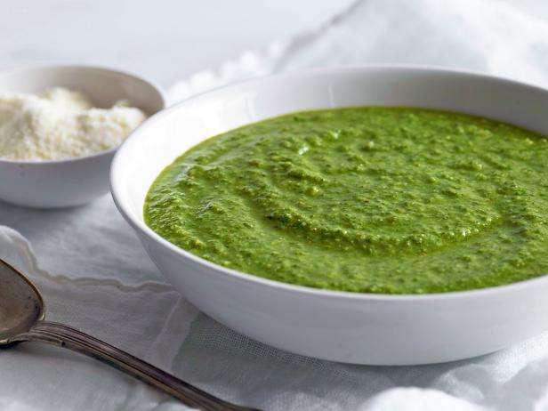

My Favorite Food
Asparagus Pesto
This is the best recipe you will ever make!

Ingredients
- Pasta
- Asparagus
- Pine Nuts
- Olive oil
- Parmesan Cheese
- Lemon Zest
Directions
- Boil Water
- Cook pasta
- Blend other ingredients
- Top with cheese
For more information check out this site.